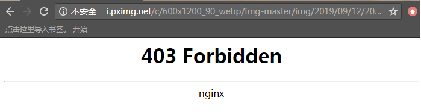
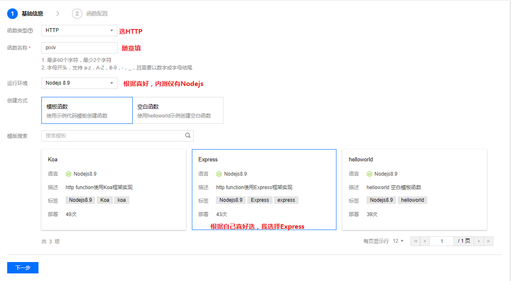
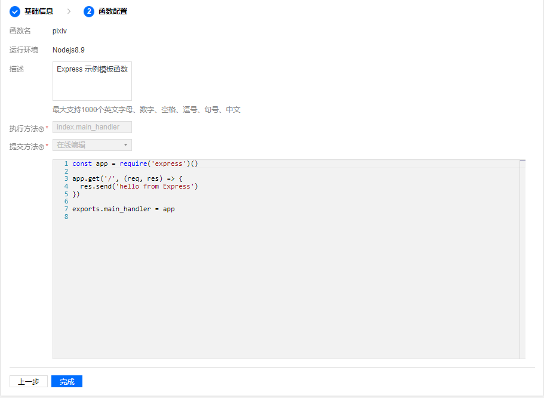
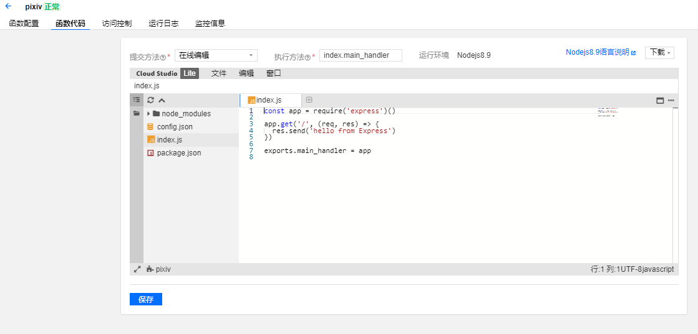
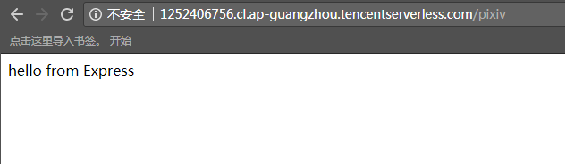

问题阐述
在Web应用开发中，我们经常会遇到跨域，Refer防盗链以及HTTPS不能降级访问HTTP资源问题，一般的浏览器禁止了跨域请求且Ajax等方式不允许修改某些Header（如Refer和Orign），针对这三种情况我们一般只能通过代理访问来解决，即在自己的服务器上写一个代理小程序，再通过自己的域名访问这个小程序来解决。但是我们本就瘦小的带宽还要分出来一部分做代理着实让人不爽，这里分享一种方法，就是通过SCF来解决。
何为SCF？
SCF（Serverless Cloud Function），即无服务器云函数，是由腾讯在无服务器架构上的一种实现（阿里和华为也有，但名称不同，如称函数工作流），无服务器（Serverless）不是表示没有服务器，而表示当在使用 Serverless 时，无需关心底层资源，也无需登录服务器和优化服务器，只需关注最核心的代码片段，即可跳过复杂的、繁琐的基本工作。核心的代码片段完全由事件或者请求触发，平台根据请求自动平行调整服务资源。Serverless 拥有近乎无限的扩容能力，空闲时，不运行任何资源。代码运行无状态，可以轻易实现快速迭代、极速部署。
简而言之，就是提供了一个粘贴代码即可运行的环境，并且没有带宽约束以及“并发约束”，实现了弹性伸缩，无需担心服务器过载。
SCF目前分为三种，普通的云函数，以及Serverless2.0中的HTTP函数和服务型函数，后二者目前在内测，很荣幸拿到了HTTP函数的内测名额，普通的云函数基于事件驱动且配置麻烦限制也多，只能返回Json，如果要返回图片等媒体资源只能Base64编码后返回，大大降低了效率。而HTTP函数则不存在这种限制，它是完全基于HTTP Request 和HTTP Response的，但这并不意味着对返回是没有限制的：
使用限制
- 当前 HTTP 函数目前仅支持 Nodejs 8.9，后续会支持多个 Runtime。
- 函数类型选定为 HTTP 后不可更改。
- HTTP 函数不支持设置触发器。
- HTTP 函数暂不支持版本和别名。
- 在 Request headers 中有以下限制：
- 所有 key 和 value 的大小不得超过4KB。
- path（含 query、params）不得超过4KB。
- body 大小不超过6MB。
- 在 Response headers 中有以下限制：
- 所有 key 和 value 的大小不得超过4KB。
- body 的大小不超过6MB。
对body的大小限制在6MB，但对于请求Json和图片等资源足够了，目前在内测阶段，说不准以后会有变动。
一个例子
下面我们通过一个例子来讲述如何通过SCF来解决上述大坑。
我们知道著名插画站Pixiv（以下简称P站）由于某些不可名状的原因被GFW拒之墙外，但是它的图片服务器域名依旧还是可以访问的，不过对图片做了防盗链处理，必须要携带Refer才能访问，否则返回403，如下图：

那么我们首先去创建一个HTTP云函数，如下图：

点击下一步，有一些函数的基本信息：

确认无误后我们点完成，这样我们就创建好了一个Hello world项目：

函数创建好之后就会为我们分配好一个公网域名，我们访问一下试试看：

基本的流程完毕了，剩下的就是写代码了，P站的防盗链机制是检查Refer，那么只要伪造Header就可以了，我已经写好一个了，代码如下（不是专业搞前端的，JS写的很烂，大佬轻喷:
const fetch = require('node-fetch');
const app = require('express')();
app.get('/', (req, res) => {
pic = req.query.url
if (pic === undefined || pic.length == 0) { // 必须要有图片url，否则我们返回400
res.status(400).json({
'code': -1,
'msg': 'URL is a necessary parameter.'
});
} else {
fetch(pic, {
headers: {
'Referer': 'https://pixiv.net',
}
}).then(function(response) {
if (!response.ok) {
res.set('Content-Type', 'application/json');
res.status(500).json({
'code': -1,
'status': 'error'
});
} else {
res.set('Content-Type', 'image/jpeg');
}
returnresponse
}).then(response => response.buffer()).then(response => res.status(200).send(response)).then().
catch(e => console.log('Msg' + e));
}
});
exports.main_handler = app
//app.listen(8080)
//app.listen(8080)
补充
SCF已经支持其他环境
参考文档
腾讯SCF官方手册